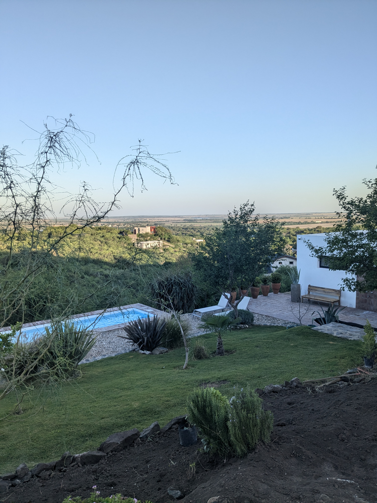
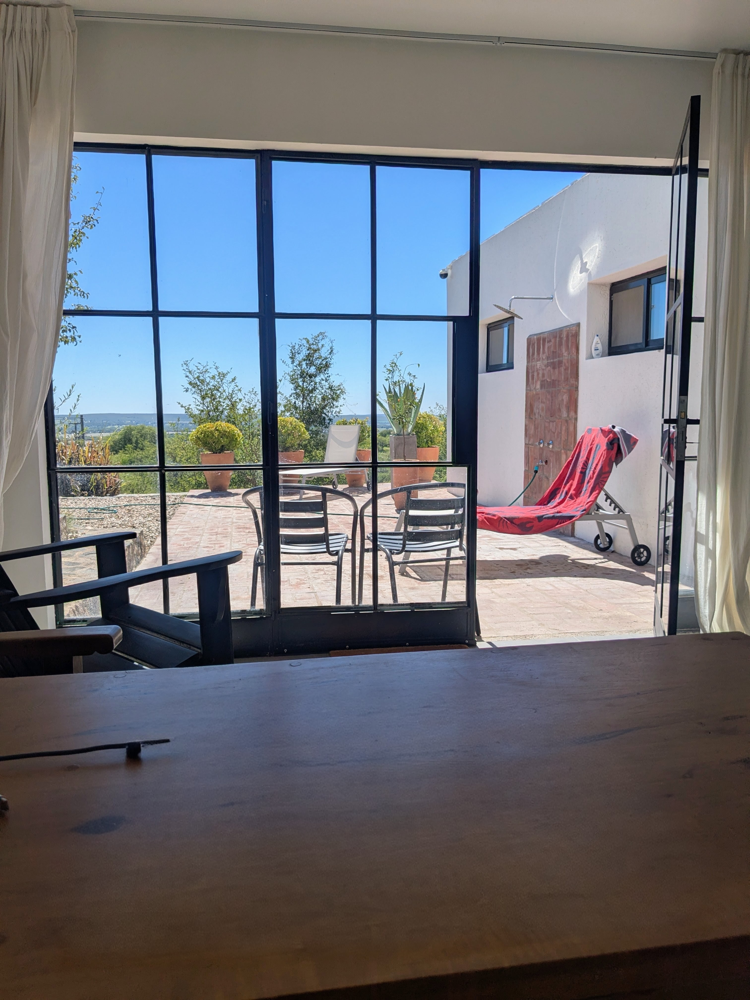
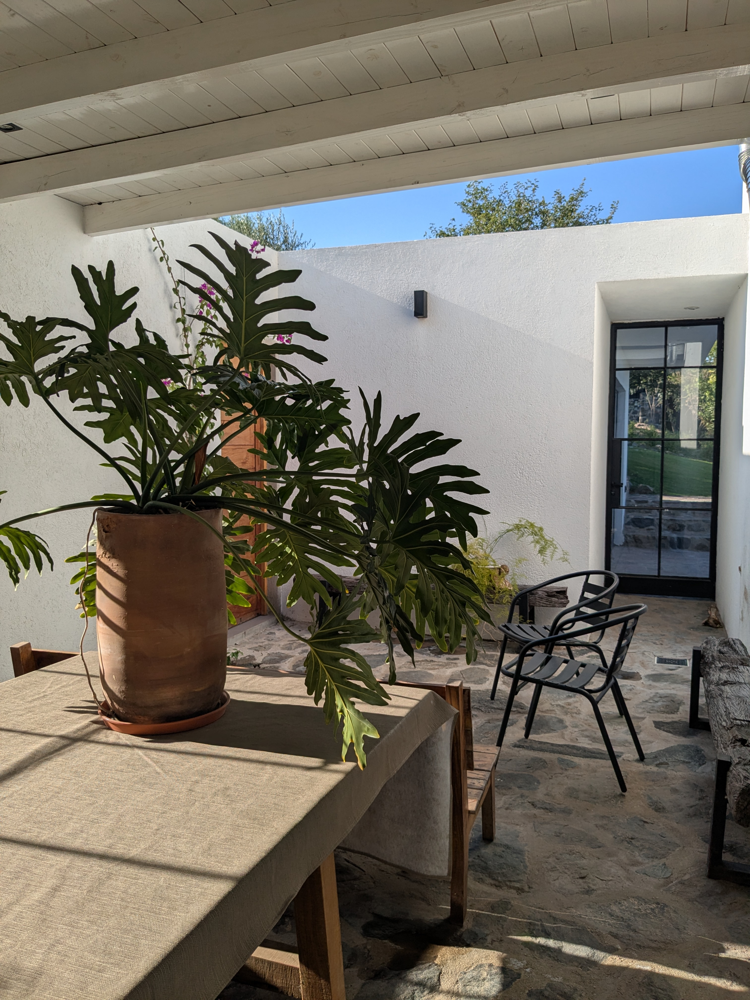
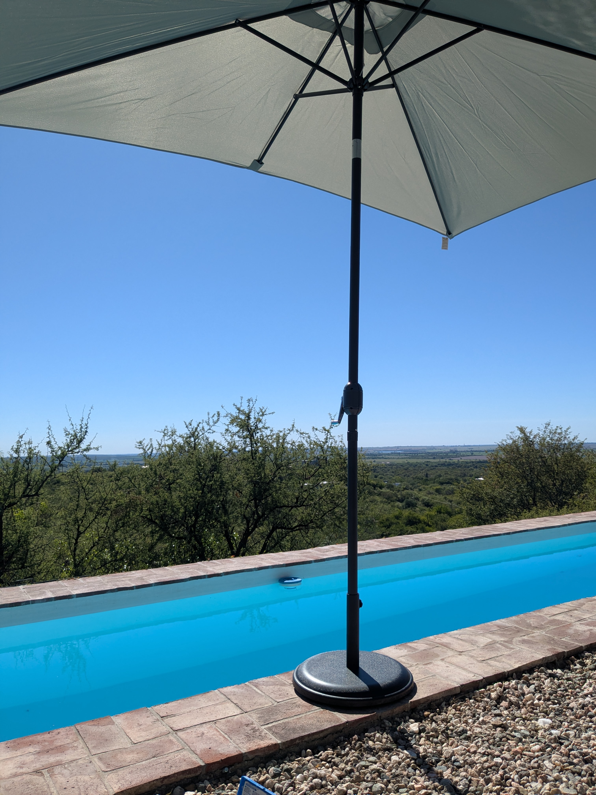
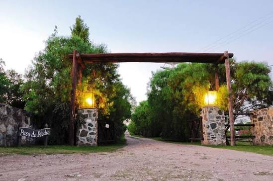
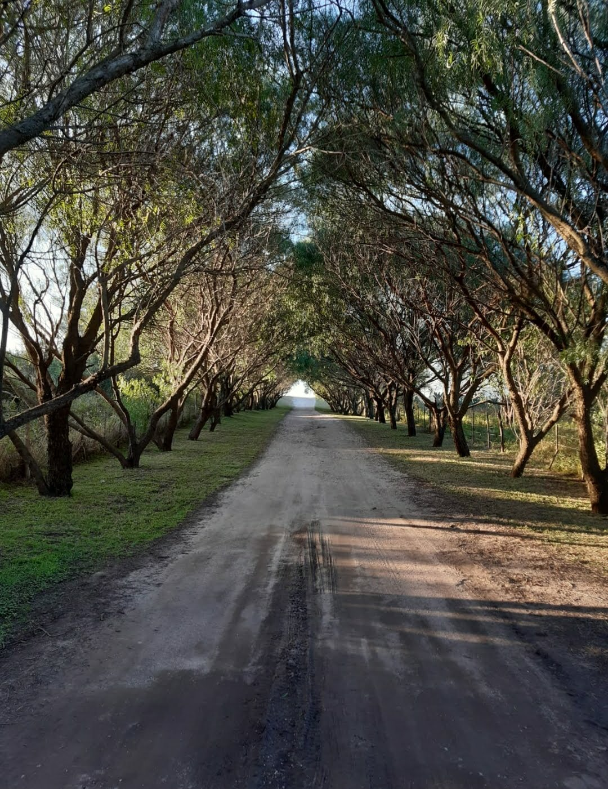
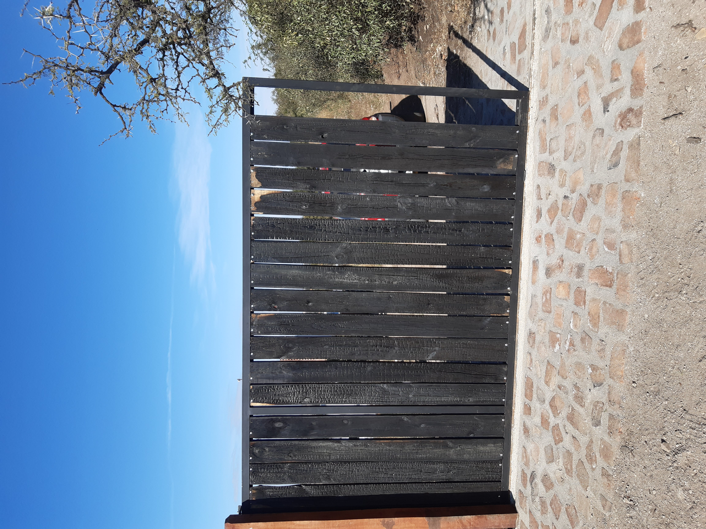
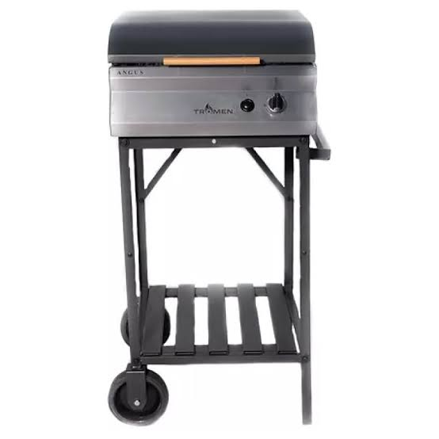
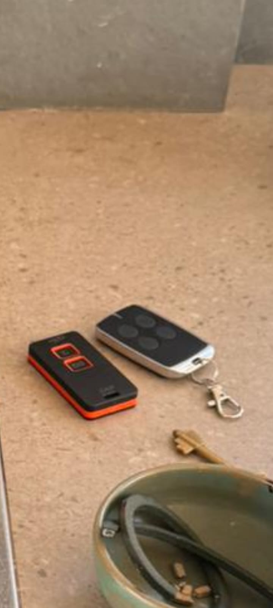
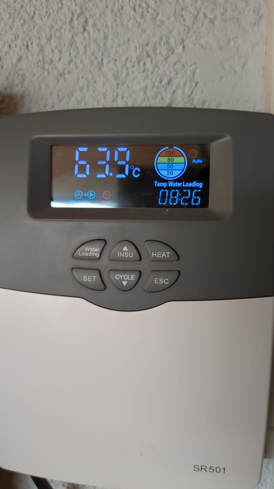

Welcome to
Quinta Sierras
Perched on a hillside in Barrio Paso de Piedra, Quinta Sierras is a private retreat surrounded by native forest, with sweeping views across the Córdoba plains. Below you'll find everything you need to arrive, settle in, and make the most of your stay.
Getting Here
Barrio Entrance — Paso de Piedra
You'll first arrive at the stone arch entrance to Barrio Paso de Piedra. Drive through — this is not gated.

The Paso de Piedra entrance — drive straight through
The Allée of Trees
Continue along the beautiful tree-lined road. The automatic gate is further ahead along this road.

Follow the road through the trees
Automatic Neighborhood Gate
Further along you'll reach the automatic gate to the neighborhood.
📍 Gate location on Maps
Open it via the Google Home app — device called "Neighborhood Gate" — or use the black remote from inside the house on your next exit.
To receive your Google Home invite, please send us your Gmail address:
Send us your Gmail via WhatsApp
Road to the House
Once through the gate, continue straight — do not turn left.
The road curves uphill. Keep going up the hill and you'll find the house on the left side.
House Gate — Black Charred Wood
Look for a black gate in charred wood on the left. This is a manual gate — slide it open to the left. Be sure to close it behind you.

The black charred wood gate — slide left to open
Parking & Entry
The garage is straight back — room for two cars.
The quincho doors are open. The house keys are inside the gas grill — open the lid to find them.

The gas grill — open the lid to find the house keys
Inside the house you'll find two gate remotes:
🟠 Orange remote — controls the house gate (when motor is engaged; otherwise open manually)
⚫ Black remote — controls the neighborhood entrance gate (alternative to Google Home)

Orange = house gate · Black = neighborhood gate
The House
Wi-Fi Network
gstar mesh
Wi-Fi Password
garrett0405
Lights
Most are smart — controllable via Google Home
Gates
Google Home app or physical remotes inside the house
Hot Water — Solar Powered
Hot water is solar-powered. The SR501 controller is located next to the washing machine — it shows current tank temperature and water level.

SR501 solar water controller — next to the washing machine
• Water Loading — press once to manually fill the tank (refills automatically too)
• Heat — press if water isn't hot enough; allow 30–40 minutes for electric heating
• The gauge on screen shows level (20 / 50 / 80 / 100%) and temperature in °C
Drinking Water
Tap water comes from our own well and is perfectly safe to drink. Bottled water is available nearby if you prefer — entirely up to you.
Pool & Garden
The pool filter runs on a timer and is fully automatic. The sprinklers are also on auto — no need to touch anything.
Day Trips
Some of our favourite spots in the Sierras and beyond.
Up the mountain
Falda del Carmen
The village general store is famous for its sandwiches. Continue up the mountain from here to reach the astronomical observatory — a wonderful detour.
📍 Falda del Carmen
Over the mountain
San Clemente
Head down the other side of the mountain for beautiful river spots — perfect for swimming and relaxing.
🍽️ Amigos de San Clemente makes outstanding traditional empanadas. Worth calling ahead — probably cash only.
+54 9 3547 50-8502
📍 Amigos de San Clemente
📍 River spot
📍 Another river spot
Short drive south
Alta Gracia
A beautiful colonial city with a UNESCO World Heritage Jesuit estancia — one of the finest in Argentina. Easily done as a half-day trip.
📍 Alta Gracia
The other way
Villa Carlos Paz
A lively lakefront town with a scenic promenade, restaurants, and cafés. Great for an evening out or a leisurely afternoon.
📍 Villa Carlos Paz
Nearby Essentials
Everything you need is within a 10 minute drive. On Ruta C45 — which you pass on the way from the city — you'll find a Shell petrol station and, right alongside it, a small shopping centre with a supermarket, butcher, greengrocer, bakery, wine and deli shop, café, pharmacy, and a pizza place.
Supermarket
Shell station market with butcher, greengrocer and bakery
Wine & Deli
Specialty wine store with cheeses and deli meats — same complex
Café
Andrea Café for coffee and sandwiches, nearby shopping centre
Pizza & more
Pizza place and other options in the same shopping centre
Pharmacy
Available at the Shell complex
Petrol
Shell station on Ruta C45 — on your way in and out
Taxi / Rideshare
Uber works in the area. Remember to open the gates for your driver.
House Rules
Quiet Hours
The neighbourhood observes quiet hours from 11pm to 7am. Please be mindful of neighbours during these times.
Guests & Capacity
Maximum 4 guests. No additional visitors or day guests who are not staying at the property.
Smoking
Outside only. Please do not leave cigarette stubs on the property.
Pets
Pets are welcome by prior arrangement only. Please contact us before bringing animals.
🔥 No Outdoor Fires
We are in a fire risk area. Open fires outdoors are strictly prohibited. The gas grill is available for cooking.
Pool
The pool is cleaned before your arrival. Some dust and debris may collect naturally — this is normal. If it looks very bad, let us know. It is not serviced daily.
🗑️ Rubbish
Please take your rubbish to the green containers on the road outside the neighbourhood — located at the police station or medical dispensary on the road to the barrio. Please do this before checking out.